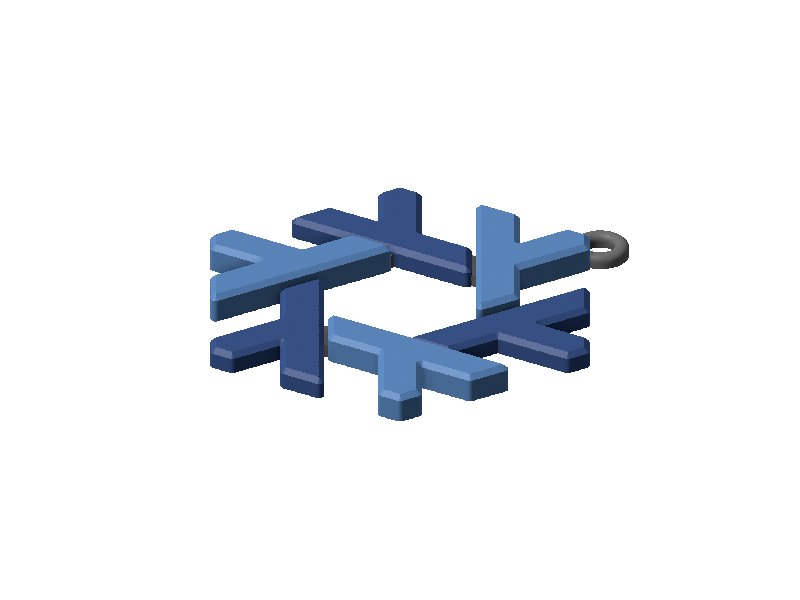
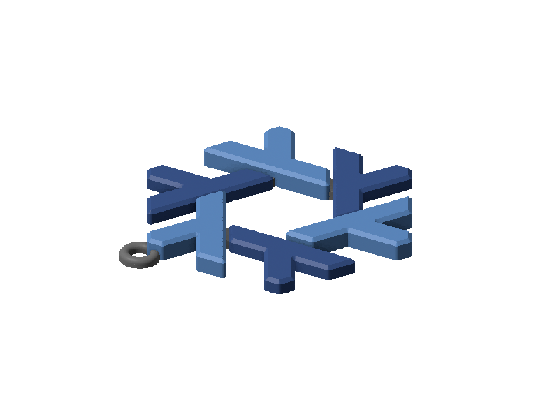
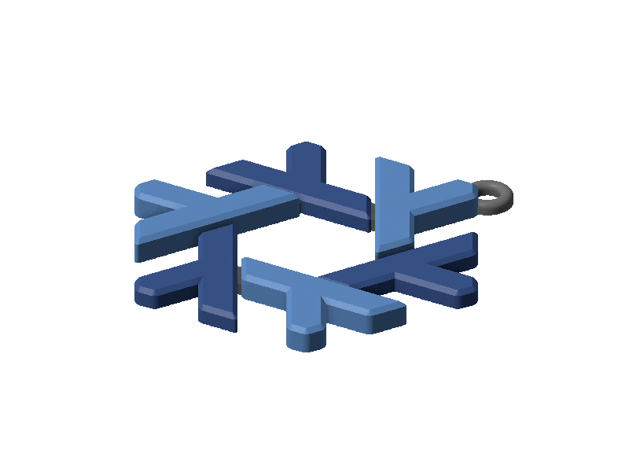

nix
Drafted with AI, not yet reviewed
point-based nix.keycap: a lambda's outline is clipped from points when the script loads, then rounded
sdf-native nix-sdf.keycap: a lambda's two pieces are the planes that bound them
NixOS snowflake earring: six lambdas in two colours and thicknesses round a hexagonal ring, their top edges chamfered, with a jump ring.
The NixOS snowflake is by Tim Cuthbertson and the NixOS artwork contributors, CC BY 4.0 (https://github.com/NixOS/nixos-artwork/blob/master/logo/README.md); this is a redrawing of it, and isn’t endorsed by the NixOS project.
Ported from src/earrings/nix.scad. Differences:
- A lambda’s outline, its bar and its arm clipped to the mask of three hexagons, is found by points::union and points::intersection when the script runs; the original intersects the shapes. Its convex corners are rounded exactly, where the original’s 12-gon offset and cone leave facets (under 0.015 mm).
- add_character, the original’s letters on the lambdas, is not ported.
- Compared with the original: within 0.013 mm.


Rewritten with fields
NixOS snowflake earring, nix.keycap with its lambdas drawn as fields: each of a lambda’s two pieces is the sides that bound it, planes as distances, where nix.keycap clips points when the script runs.

nix.keycap point-based

nix-sdf.keycap sdf-nativenix.keycap |
nix-sdf.keycap |
|
|---|---|---|
| Nodes | 4453 | 654 |
| Shaded render, CPU-s | 2.0 | 0.6 |
| Export at 10 cells per mm, CPU-s | 41 | 16 |
- Max deviation: 0.16 mm at the lambdas’ 60 and 120 degree corners, 0.33 mm where the chamfer meets their concave corner
- Trade-off: a seventh of the nodes, a third of the render and under half the export, with no points clipped when the script loads; it gives up circular rounds where sides meet off square, and an exact field inside the concave corner.
Files
Source
nix.keycap
// NixOS snowflake earring: six lambdas in two colours and thicknesses // round a hexagonal ring, their top edges chamfered, with a jump ring. // // The NixOS snowflake is by Tim Cuthbertson and the NixOS artwork // contributors, CC BY 4.0 // (https://github.com/NixOS/nixos-artwork/blob/master/logo/README.md); // this is a redrawing of it, and isn't endorsed by the NixOS project. // // Ported from src/earrings/nix.scad. Differences: // - A lambda's outline, its bar and its arm clipped to the mask of three // hexagons, is found by points::union and points::intersection when // the script runs; the original intersects the shapes. Its convex // corners are rounded exactly, where the original's 12-gon offset and // cone leave facets (under 0.015 mm). // - add_character, the original's letters on the lambdas, is not ported. // idiom point-based: a lambda's outline is clipped from points when the script loads, then rounded import "keycap/points" as points; // --- Parameters --- const RADIUS = 15.0; const ADD_RING = true; const THICKNESS_CONNECTION = 1.0; const THICKNESS_A = 1.5; const THICKNESS_B = 2.0; const RING_THICKNESS = 1.0; const RING_RADIUS = 1.5; const ENABLE_GAP = true; // --- Derived sizes --- fn sizes() { let r = global::RADIUS; let inscribed = r * sqrt(3.0) / 2.0; #{ r: r, inscribed: inscribed, inner: r * 2.0 / 5.0, inner_inscribed: inscribed * 2.0 / 5.0, gap: if global::ENABLE_GAP { r / 85.0 } else { 0.0 }, rounding: r / 40.0, lambda: r / 5.0, t: 0.01, } } // --- Parts --- // A rectangle's corners, `size` wide, centred on `centre`, turned by // `angle` degrees about the origin. fn rect_points(centre, size, angle) { let half = [size[0] / 2.0, size[1] / 2.0]; let corners = [[-half[0], -half[1]], [half[0], -half[1]], half, [-half[0], half[1]]]; points::rotate(points::move(corners, centre), angle) } // One lambda: its bar and its arm, clipped to the mask of three hexagons, // its convex corners rounded and its concave ones sharp, as the original's // opening leaves them. fn lambda() { let s = sizes(); let shift = s.gap * sqrt(3.0); let hexagon = points::regular_polygon(6, s.r); let masks = [ hexagon, points::move(hexagon, [s.inner - s.r - shift, 0.0]), points::move(hexagon, [(s.inner - s.r) / 2.0, s.inscribed + s.inner_inscribed]), ]; let bar = rect_points([(s.inner - s.r) / 2.0 - shift, s.inner_inscribed + s.lambda / 2.0], [s.r, s.lambda], 0); let arm = rect_points([0.0, 0.0], [s.r * 2.0, s.lambda], 120); let outline = points::union(bar, arm); for m in masks { outline = points::intersection(outline, m); } rounded_polygon(outline, s.rounding, #{concave: 0}) } // Three lambdas, `thickness` thick, every other one round the ring, their // top edges chamfered by the rounding. fn lambdas(thickness, first) { lambda() .extrude([0, thickness], #{chamfer: [0, sizes().rounding]}) .rotate_z(60 * first) .polar_array(3) } // The hexagonal ring the lambdas stand on, a little thinner. fn connection() { let s = sizes(); regular_polygon(6, (s.inner_inscribed + s.lambda) / (sqrt(3.0) / 2.0)) .difference(regular_polygon(6, s.inner)) .offset(-s.rounding) .extrude([s.t, global::THICKNESS_CONNECTION - s.t]) } // The jump ring: a round-topped band revolved, at the tip of a lambda. fn ring() { let s = sizes(); let t = global::RING_THICKNESS; let band = union(circle(t / 2.0).move([0, t / 2.0]), rect([t, t / 2.0]).move([0, t / 4.0])); let o = s.r + global::RING_RADIUS - t * 2.0 / 3.0; band.move([global::RING_RADIUS, 0]).revolve().move([o * cosd(60), o * sind(60), 0]) } // --- Assembly --- draw_rgb(lambdas(THICKNESS_A, 0), 0.255, 0.369, 0.604); draw_rgb(lambdas(THICKNESS_B, 1), 0.412, 0.604, 0.843); draw_rgb(connection(), 0.5, 0.5, 0.5); if ADD_RING { draw_rgb(ring(), 0.5, 0.5, 0.5); }
nix-sdf.keycap
// NixOS snowflake earring, nix.keycap with its lambdas drawn as fields: // each of a lambda's two pieces is the sides that bound it, planes as // distances, where nix.keycap clips points when the script runs. // // The NixOS snowflake is by Tim Cuthbertson and the NixOS artwork // contributors, CC BY 4.0 // (https://github.com/NixOS/nixos-artwork/blob/master/logo/README.md); // this is a redrawing of it, and isn't endorsed by the NixOS project. // // Differences from nix.keycap: // - intersection_round rounds each piece's corners; where two sides meet // at 60 or 120 degrees, its round is hg_sdf's, not a circle tangent to // both, up to 0.16 mm off. // - The concave corner where the bar leaves the arm is a plain union's, a // bound inside, so the chamfer on top cuts up to 0.33 mm differently // there. // idiom sdf-native: a lambda's two pieces are the planes that bound them // --- Parameters --- const RADIUS = 15.0; const ADD_RING = true; const THICKNESS_CONNECTION = 1.0; const THICKNESS_A = 1.5; const THICKNESS_B = 2.0; const RING_THICKNESS = 1.0; const RING_RADIUS = 1.5; const ENABLE_GAP = true; // --- Derived sizes --- fn sizes() { let r = global::RADIUS; #{ r: r, inner: r * 2.0 / 5.0, inner_inscribed: r * sqrt(3.0) / 2.0 * 2.0 / 5.0, gap: if global::ENABLE_GAP { r / 85.0 } else { 0.0 }, rounding: r / 40.0, lambda: r / 5.0, t: 0.01, } } // --- Parts --- // The half-plane inside the side of a hexagon of circumradius `r` centred // on `c` that faces `angle` degrees: a plane as a distance. fn side(c, angle, r) { cosd(angle) * (x - c[0]) + sind(angle) * (y - c[1]) - r * sqrt(3.0) / 2.0 } // One lambda: its bar and its arm, each the sides that bound it, where the // hexagons of the original's mask cut them, their corners rounded. Every // side is named once: two coinciding sides in one intersection_round would // each round the other away. fn lambda() { let s = sizes(); let shift = s.gap * sqrt(3.0); let beside = [s.inner - s.r - shift, 0.0]; let y0 = s.inner_inscribed; let y1 = y0 + s.lambda; let bar = [y0 - y, y - y1, side([0, 0], 150, s.r), side(beside, 30, s.r)]; // The arm, along 120 degrees, its foot inside the bar. let across = sind(120) * x - cosd(120) * y; let arm = [abs(across) - s.lambda / 2.0, side([0, 0], 90, s.r), side([0, 0], 150, s.r), (y0 + y1) / 2.0 - y]; union(intersection_round(bar, s.rounding), intersection_round(arm, s.rounding)) } // Three lambdas, `thickness` thick, every other one round the ring, their // top edges chamfered by the rounding. fn lambdas(thickness, first) { lambda() .extrude([0, thickness], #{chamfer: [0, sizes().rounding]}) .rotate_z(60 * first) .polar_array(3) } // The hexagonal ring the lambdas stand on, a little thinner. fn connection() { let s = sizes(); regular_polygon(6, (s.inner_inscribed + s.lambda) / (sqrt(3.0) / 2.0)) .difference(regular_polygon(6, s.inner)) .offset(-s.rounding) .extrude([s.t, global::THICKNESS_CONNECTION - s.t]) } // The jump ring: a round-topped band revolved, at the tip of a lambda. fn ring() { let s = sizes(); let t = global::RING_THICKNESS; let band = union(circle(t / 2.0).move([0, t / 2.0]), rect([t, t / 2.0]).move([0, t / 4.0])); let o = s.r + global::RING_RADIUS - t * 2.0 / 3.0; band.move([global::RING_RADIUS, 0]).revolve().move([o * cosd(60), o * sind(60), 0]) } // --- Assembly --- draw_rgb(lambdas(THICKNESS_A, 0), 0.255, 0.369, 0.604); draw_rgb(lambdas(THICKNESS_B, 1), 0.412, 0.604, 0.843); draw_rgb(connection(), 0.5, 0.5, 0.5); if ADD_RING { draw_rgb(ring(), 0.5, 0.5, 0.5); }